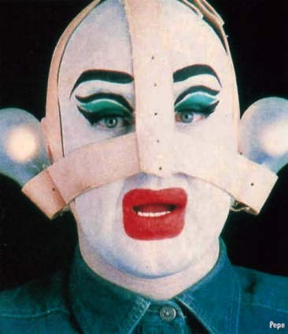

| Når skidt kommer til ære |
20. September 2003 |
 Leigh Bowery. |
|
| Der bliver også vist filmen "The Legend og Leigh Bowery" af Charles Atlas. Londons klubscene var i firserne prøget af mærkelige skabninger, hvis eneste formål var at se ud. Så længe de sprøngte alle rammer for, hvad der var tilladt og brød med det konventionelle, så gik det. | |
|
www.leighbowery.com.br |
|